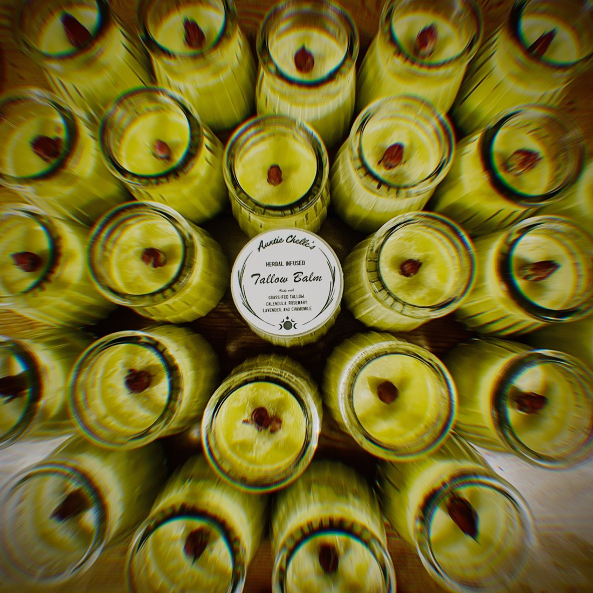

Pasture-raised tallowOrganic herbsFive ingredientsMade in Asheville, NC
Rendered by hand
Tallow rendered on my own stove and strained by hand twice through cloth. No machines, no shortcuts.
Herbs infused low and slow
Calendula, rosemary, lavender and chamomile sourced from a local co-op, weighed out, infused and strained — never a pre-made extract.
Poured by the batch
Filled, capped and labelled by hand — thirty jars at a time, as much as fits on auntie’s stove.
How to use it
A little goes a long way
Warm a small amount between your fingers and massage it into dry, irritated, or thirsty skin, wherever it’s needed. It makes a beautiful everyday moisturizer for face and body. A little goes a long way — one jar typically lasts a season and is naturally shelf stable.
For everyday face and body moisture
For soothing dry, flaky, wind-chapped, or irritated skin
For protecting baby’s delicate skin from everyday wetness and irritation
For caring for minor scrapes and areas of skin that need a little extra protection
For nourishing and moisturizing stretching skin during pregnancy
For conditioning beards and moisturizing the skin beneath
Beef suet, rendered low and slow for twenty-four hours
Tallow starts as suet — the fat that surrounds the cow’s kidneys — cooked gently for a full day until it becomes clarified. Suet is nutrient dense: vitamins A, D, E, K and B12, plus linoleic acid. Once rendered, I infuse it with my signature herbal blend, and it turns into a soothing balm.

Tell me about the herbs
Four plants, chosen on purpose
Calendula
The skin-loving herb we reach for when things feel dry, tender, or in need of a little extra care. Calendula has a long tradition of use in herbal skincare and is loved for helping support the skin’s natural renewal process.
Rosemary
More than a kitchen herb, rosemary has been used for generations in traditional skin preparations. It’s naturally cleansing and antioxidant-rich, and makes a beautiful aromatic addition to the balm.
Lavender
Lavender has earned its place in the herbal cabinet. It’s traditionally used to calm irritated-feeling skin, while its gentle floral aroma makes applying the balm feel like a tiny moment of care.
Chamomile
Gentle enough for sensitive-feeling skin and deeply comforting when things feel dry or irritated. Chamomile is traditionally treasured for its soothing qualities, making it a natural companion to rich, nourishing tallow.
Local pickup & delivery
Rather skip the shipping?
If you’re in the Asheville area, message me and we’ll arrange a pickup — or I’ll drop it off if you’re close by. No shipping cost, no waiting on the post office. I’m at markets now and then too; I’ll post market locations on Instagram.
Fifteen years of nursing taught me a lot about the body. Getting sick taught me the rest.
After Lyme disease in 2019, I went looking for answers outside of what I’d been trained on — a search that brought me to Asheville, to herbalism, and eventually to my own kitchen.